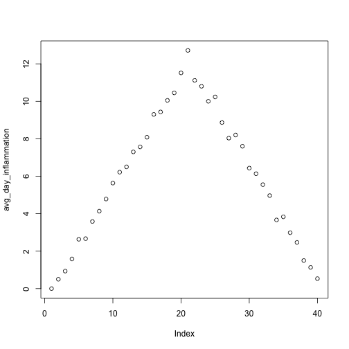
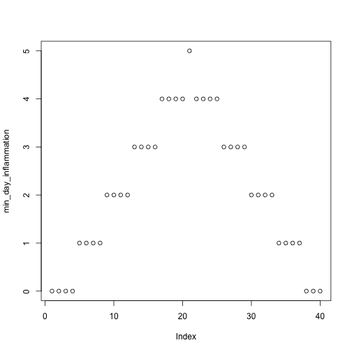
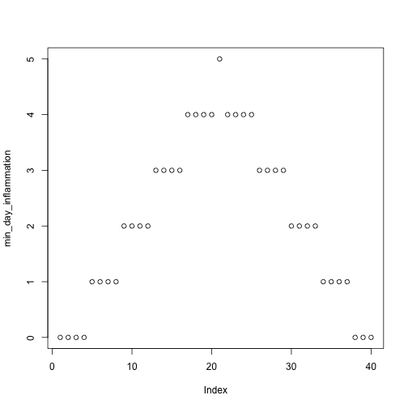

Programming with R
Analyzing multiple data sets
Learning Objectives
- Explain what a
forloop does. - Correctly write
forloops to repeat simple calculations. - Trace changes to a loop variable as the loop runs.
- Trace changes to other variables as they are updated by a
forloop. - Use a function to get a list of filenames that match a simple pattern.
- Use a
forloop to process multiple files.
We have created a function called analyze that creates graphs of the minimum, average, and maximum daily inflammation rates for a single data set:
analyze <- function(filename) {
# Plots the average, min, and max inflammation over time.
# Input is character string of a csv file.
dat <- read.csv(file = filename, header = FALSE)
avg_day_inflammation <- apply(dat, 2, mean)
plot(avg_day_inflammation)
max_day_inflammation <- apply(dat, 2, max)
plot(max_day_inflammation)
min_day_inflammation <- apply(dat, 2, min)
plot(min_day_inflammation)
}
analyze("data/inflammation-01.csv")


We can use it to analyze other data sets one by one:
analyze("data/inflammation-02.csv") 

but we have a dozen data sets right now and more on the way. We want to create plots for all our data sets with a single statement. To do that, we’ll have to teach the computer how to repeat things.
For Loops
Suppose we want to print each word in a sentence. One way is to use six print statements:
best_practice <- c("Let", "the", "computer", "do", "the", "work")
print_words <- function(sentence) {
print(sentence[1])
print(sentence[2])
print(sentence[3])
print(sentence[4])
print(sentence[5])
print(sentence[6])
}
print_words(best_practice)[1] "Let"
[1] "the"
[1] "computer"
[1] "do"
[1] "the"
[1] "work"
but that’s a bad approach for two reasons:
It doesn’t scale: if we want to print the elements in a vector that’s hundreds long, we’d be better off just typing them in.
It’s fragile: if we give it a longer vector, it only prints part of the data, and if we give it a shorter input, it returns
NAvalues because we’re asking for elements that don’t exist!
best_practice[-6][1] "Let" "the" "computer" "do" "the"
print_words(best_practice[-6])[1] "Let"
[1] "the"
[1] "computer"
[1] "do"
[1] "the"
[1] NA
Here’s a better approach:
print_words <- function(sentence) {
for (word in sentence) {
print(word)
}
}
print_words(best_practice)[1] "Let"
[1] "the"
[1] "computer"
[1] "do"
[1] "the"
[1] "work"
This is shorter—certainly shorter than something that prints every character in a hundred-letter string—and more robust as well:
print_words(best_practice[-6])[1] "Let"
[1] "the"
[1] "computer"
[1] "do"
[1] "the"
The improved version of print_words uses a for loop to repeat an operation—in this case, printing—once for each thing in a collection. The general form of a loop is:
for (variable in collection) {
do things with variable
}We can name the loop variable anything we like (with a few restrictions, e.g. the name of the variable cannot start with a digit). in is part of the for syntax. Note that the body of the loop is enclosed in curly braces { }. For a single-line loop body, as here, the braces aren’t needed, but it is good practice to include them as we did.
Here’s another loop that repeatedly updates a variable:
len <- 0
vowels <- c("a", "e", "i", "o", "u")
for (v in vowels) {
len <- len + 1
}
# Number of vowels
len[1] 5
It’s worth tracing the execution of this little program step by step. Since there are five elements in the vector vowels, the statement inside the loop will be executed five times. The first time around, len is zero (the value assigned to it on line 1) and v is "a". The statement adds 1 to the old value of len, producing 1, and updates len to refer to that new value. The next time around, v is "e" and len is 1, so len is updated to be 2. After three more updates, len is 5; since there is nothing left in the vector vowels for R to process, the loop finishes.
Note that a loop variable is just a variable that’s being used to record progress in a loop. It still exists after the loop is over, and we can re-use variables previously defined as loop variables as well:
letter <- "z"
for (letter in c("a", "b", "c")) {
print(letter)
}[1] "a"
[1] "b"
[1] "c"
# after the loop, letter is
letter[1] "c"
Note also that finding the length of a vector is such a common operation that R actually has a built-in function to do it called length:
length(vowels)[1] 5
length is much faster than any R function we could write ourselves, and much easier to read than a two-line loop; it will also give us the length of many other things that we haven’t met yet, so we should always use it when we can (see this lesson to learn more about the different ways to store data in R).
Challenge - Using loops
- R has a built-in function called
seqthat creates a list of numbers:
seq(3)[1] 1 2 3
Using seq, write a function that prints the first N natural numbers, one per line:
print_N(3)[1] 1
[1] 2
[1] 3
- Write a function called
totalthat calculates the sum of the values in a vector. (R has a built-in function calledsumthat does this for you. Please don’t use it for this exercise.)
ex_vec <- c(4, 8, 15, 16, 23, 42)
total(ex_vec)[1] 108
- Exponentiation is built into R:
2^4[1] 16
Write a function called expo that uses a loop to calculate the same result.
expo(2, 4)[1] 16
Processing Multiple Files
We now have almost everything we need to process all our data files. The only thing that’s missing is a function that finds files whose names match a pattern. We do not need to write it ourselves because R already has a function to do this called list.files.
If we run the function without any arguments, list.files(), it returns every file in the current working directory. We can understand this result by reading the help file (?list.files). The first argument, path, is the path to the directory to be searched, and it has the default value of "." (recall from the lesson on the Unix Shell that "." is shorthand for the current working directory). The second argument, pattern, is the pattern being searched, and it has the default value of NULL. Since no pattern is specified to filter the files, all files are returned.
So to list all the csv files, we could run either of the following:
list.files(path = "data", pattern = "csv") [1] "car-speeds-cleaned.csv" "car-speeds.csv"
[3] "inflammation-01.csv" "inflammation-02.csv"
[5] "inflammation-03.csv" "inflammation-04.csv"
[7] "inflammation-05.csv" "inflammation-06.csv"
[9] "inflammation-07.csv" "inflammation-08.csv"
[11] "inflammation-09.csv" "inflammation-10.csv"
[13] "inflammation-11.csv" "inflammation-12.csv"
[15] "sample.csv" "small-01.csv"
[17] "small-02.csv" "small-03.csv"
list.files(path = "data", pattern = "inflammation") [1] "inflammation-01.csv" "inflammation-02.csv" "inflammation-03.csv"
[4] "inflammation-04.csv" "inflammation-05.csv" "inflammation-06.csv"
[7] "inflammation-07.csv" "inflammation-08.csv" "inflammation-09.csv"
[10] "inflammation-10.csv" "inflammation-11.csv" "inflammation-12.csv"
As these examples show, list.files result is a vector of strings, which means we can loop over it to do something with each filename in turn. In our case, the “something” we want is our analyze function.
Because we have put our data in separate subdirectory, if we want to access these files using the output of list.files we also need to include the “path” portion of the file name. We can do that by using the argument full.names = TRUE.
list.files(path = "data", pattern = "csv", full.names = TRUE) [1] "data/car-speeds-cleaned.csv" "data/car-speeds.csv"
[3] "data/inflammation-01.csv" "data/inflammation-02.csv"
[5] "data/inflammation-03.csv" "data/inflammation-04.csv"
[7] "data/inflammation-05.csv" "data/inflammation-06.csv"
[9] "data/inflammation-07.csv" "data/inflammation-08.csv"
[11] "data/inflammation-09.csv" "data/inflammation-10.csv"
[13] "data/inflammation-11.csv" "data/inflammation-12.csv"
[15] "data/sample.csv" "data/small-01.csv"
[17] "data/small-02.csv" "data/small-03.csv"
list.files(path = "data", pattern = "inflammation", full.names = TRUE) [1] "data/inflammation-01.csv" "data/inflammation-02.csv"
[3] "data/inflammation-03.csv" "data/inflammation-04.csv"
[5] "data/inflammation-05.csv" "data/inflammation-06.csv"
[7] "data/inflammation-07.csv" "data/inflammation-08.csv"
[9] "data/inflammation-09.csv" "data/inflammation-10.csv"
[11] "data/inflammation-11.csv" "data/inflammation-12.csv"
Let’s test out running our analyze function by using it on the first three files in the vector returned by list.files:
filenames <- list.files(path = "data", pattern = "inflammation", full.names = TRUE)
filenames <- filenames[1:3]
for (f in filenames) {
print(f)
analyze(f)
}[1] "data/inflammation-01.csv"

[1] "data/inflammation-02.csv"
[1] "data/inflammation-03.csv"
Sure enough, the maxima of these data sets show exactly the same ramp as the first, and their minima show the same staircase structure.
Challenge - Using loops to analyze multiple files
- Write a function called
analyze_allthat takes a filename pattern as its sole argument and runsanalyzefor each file whose name matches the pattern.